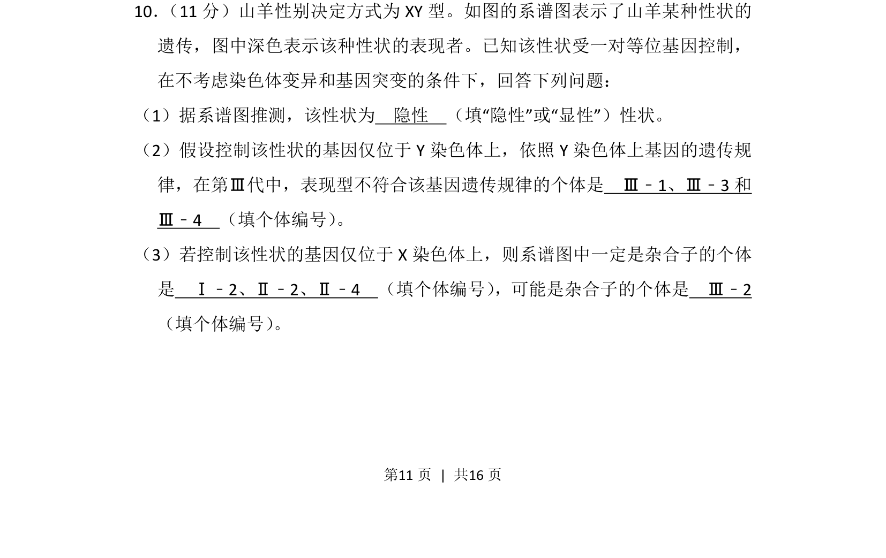
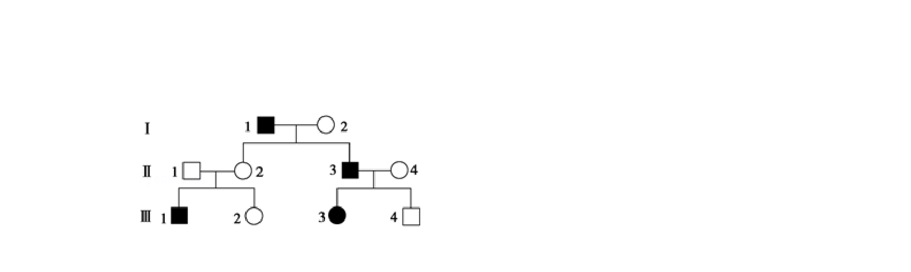
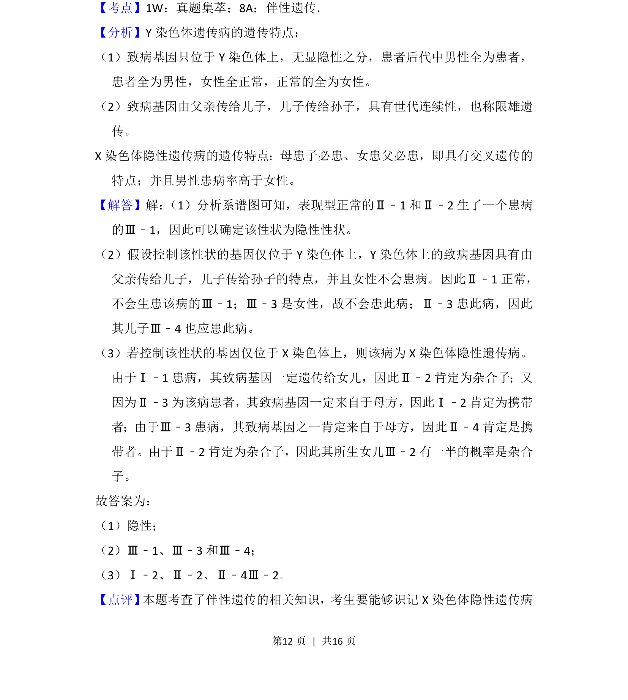
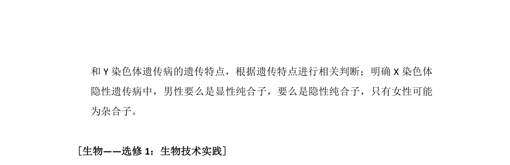

考点：遗传系谱分析 基因定位 伴性遗传 杂合子判断


该题通过山羊系谱图考查遗传方式判断、伴性遗传规律及杂合子推断。


📄 原 PDF 第 11 页：
素材/真题/吉林/2008-2024·（吉林）生物高考真题/2014年高考生物试卷（新课标Ⅱ）（解析卷）.pdf
10． （11分）山羊性别决定方式为XY型。如图的系谱图表示了山羊某种性状的 遗传，图中深色表示该种性状的表现者。已知该性状受一对等位基因控制， 在不考虑染色体变异和基因突变的条件下，回答下列问题： （1）据系谱图推测，该性状为 隐性 （填“隐性”或“显性”）性状。 （2）假设控制该性状的基因仅位于Y染色体上，依照Y染色体上基因的遗传规 律，在第Ⅲ代中，表现型不符合该基因遗传规律的个体是 Ⅲ﹣1、Ⅲ﹣3和 Ⅲ﹣4 （填个体编号） 。 （3）若控制该性状的基因仅位于X染色体上，则系谱图中一定是杂合子的个体 是 Ⅰ﹣2、Ⅱ﹣2、Ⅱ﹣4 （填个体编号） ，可能是杂合子的个体是 Ⅲ﹣2 （填个体编号） 。